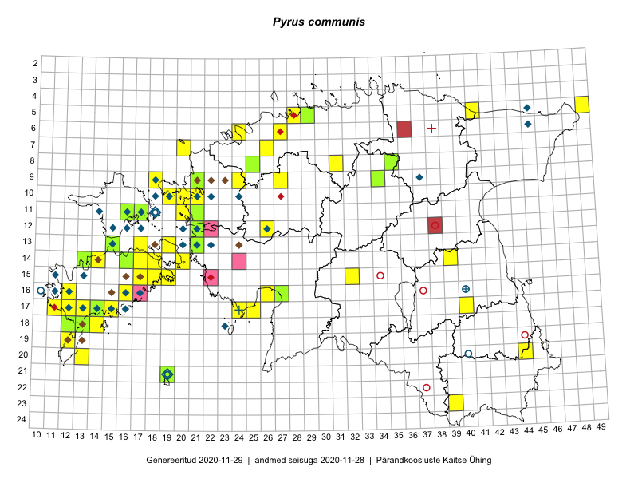

Pyrus communis
Uuendatud: 2016-12-02
Kaardile koondatud taksonid: Pyrus communis L.

Kaart põhineb 53 kirjel, neist vaatlusi 50 ja eksemplare 3. Taksonit on leitud 33 ruudust.
Kuvatud viited 20 esimesele andmebaasikirjele, ülejäänud PlutoFis
- Tiit Hallikma, Toomas Kukk: 2015-07-22: 05-49: ala
- Tiit Hallikma, Toomas Kukk: 2015-07-22: 05-49: GPS punkt
- Toomas Kukk, Mari Reitalu: 2014-06-20: 17-12: ala
- Tiit Hallikma, Toomas Kukk: 2015-08-27: 12-21: ala
- Eeva-Maria Jeletsky, Tarmo Niitla: 2015-05-03: 14-39: ala
- Eeva-Maria Jeletsky, Tarmo Niitla: 2015-06-22: 11-16: ala
- Erkki Otsman, Sergei Smirnov: 2015-05-29: 06-24: ala
- Mari Reitalu, Oliver Parrest: 2015-05-26: 20-13: ala
- Mari Reitalu: 2015-06-16: 16-12: ala
- Mari Reitalu, Sirje Azarov, Oliver Parrest: 2015-08-02: 18-12: ala
- Mari Reitalu, Oliver Parrest: 2015-05-27: 18-13: ala
- Mari Reitalu, Triin Reitalu: 2015-05-19: 17-11: ala
- Mari Reitalu, Triin Reitalu: 2015-08-05: 17-11: ala
- Mari Reitalu: 2015-10-17: 16-12: GPS punkt
- Mari Reitalu, Triin Reitalu: 2014-07-17: 18-14: ala
- Elle Rajandu: 2015-07-24: 14-18: GPS punkt
- Kadri Tali: 2015-06-03: 13-19: ala
- Triin Reitalu, Mari Reitalu: 2015-08-05: 17-11: GPS punkt
- Triin Reitalu, Mari Reitalu: 2015-05-20: 17-11: GPS punkt
- Hanna-Eliisa Luts, Tõnu Ploompuu: 2015-08-13: 11-21: ala